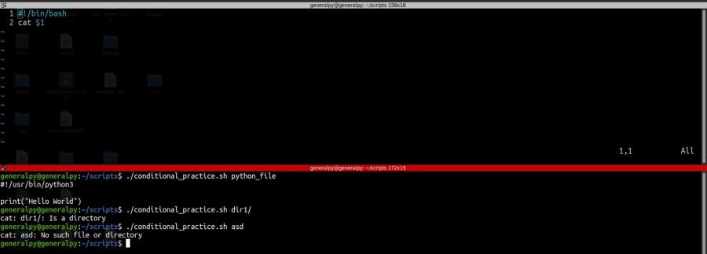
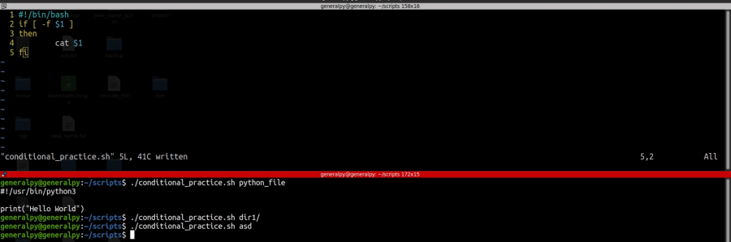
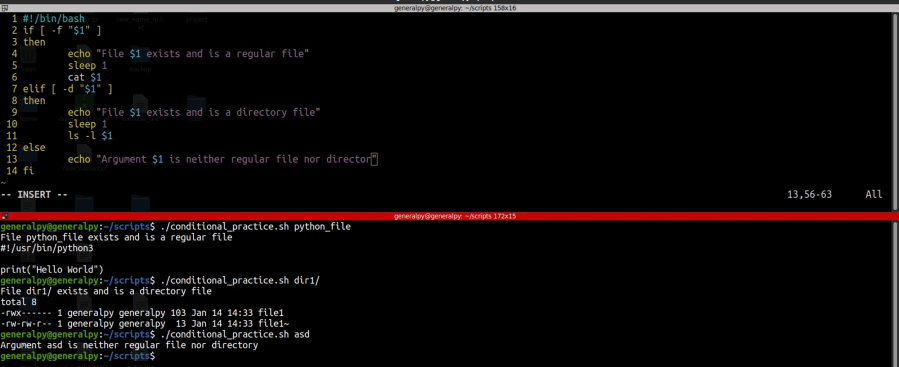
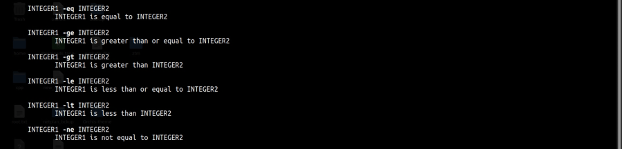
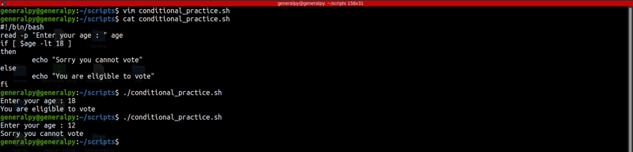
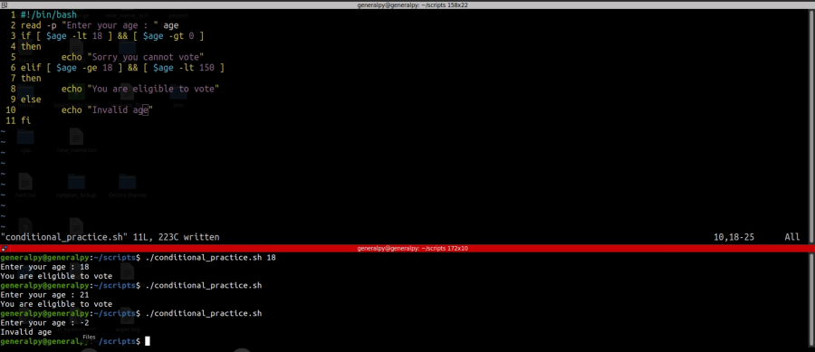

if, elif and else statements are basic control statements of bash scripting language.
These statements check test for a condition and execute commands accordingly.
Syntax of these statments are :
if [ testing_condition ]
then
commands
elif [ testing_conditions ]
then
commands
else
commands
fi
Note that when testing conditions, there should be a space between square brackets and the conditions. If can occur alone but elif and else always occur with if. fi is used to end if block.
When if condition fails, then if present, control is tranferred to elif statements and then finally to else if all elif statments fail to or are not present.
Let's look at an example.

As we can see in image above, our script fails if non regular files or non existing files are passed as an argument.
Let's use if conditions.

In above program we added a testing condition -f which checks if the file exists and is regular file. If yes then cat else do nothing. There are many testing conditions which can be found using man test.

We modifed the script to add elif and else. elif checks if file exists and is a directory.
Note that it is always good to enclose user input inside the quotes as input can also be space separated string and quotes will take care of that.
The square brackets we use for testing is the old syntax. There is also a new and reliable syntax which can be used to to test conditions. We use double square brackets instead of single square brackets.
if [[ -f $1 ]]
then
cat $1
fi
The double brackets is a more secure approach as it provides benefits like automaticlly quoting string so that we don't have to add quotes for space separated strings.

Above testing conditions are used to test integers.

We can check for multiple conditions using &&(and) and ||(or) operators.
if [ condition ] && [ condition2 ] ...
then
commands
fi
Let's edit our voting program.
[To indent multiple lines in vim, press shift + v, then select lines using arrow keys and after that press > or shift + . to right indent lines].

Here we added and with more conditions.
if [ condtion ] is equal to if test condition
We can also write then in same line.
if [ condition ]; then